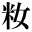
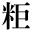
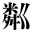
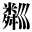

|  | 1_89_81.gif |
●森鴎外『山椒大夫』 |
|  | 1_89_83.gif |
●森鴎外『山椒大夫』 |
|  | 1_89_85.gif |
●尾崎紅葉『金色夜叉』 |
| 1_89_87.gif |
●国枝史郎『天主閣の音』 ●南方熊楠『十二支考（２）兎に関する民俗と伝説』 |
|
| 1_89_88.gif |
●岡本綺堂『半七捕物帳 唐人飴』 ●夢野久作（杉山萠圓）『街頭から見た新東京の裏面』 |
|  | 2_83_91.gif |
●尾崎紅葉『金色夜叉』 |